| 日付 | 2009年6月7日（日） |
|---|---|
| 山域 | 南アルプス |
| メンバー | 単独 |
| 山行形態 | 日帰り |
| アクセス | 電車、バス |
| ルート (Map) | 白須→矢立石→日向山→錦滝→龍神平→駒ヶ岳神社 |
日向山という名前の山は日本全国にたくさんあるが、パッとした山はあまりない。
その中で唯一名峰の風格があるのが、南ア前衛の日向山だ。
梅雨前の貴重な晴れの休日をいかして、その日向山に行って見ることにする。
韮崎駅に到着。駅からは茅ヶ岳がきれいに見える。
ニセ八と呼ばれるピークだが、八ヶ岳にそっくりだ。
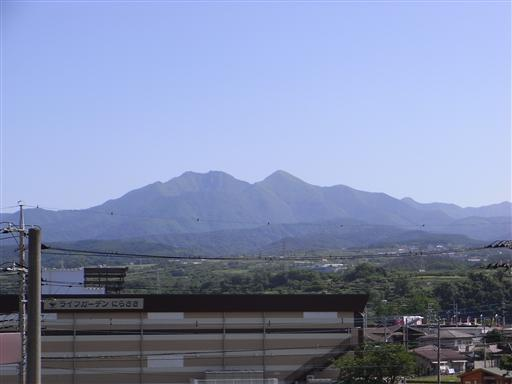
9:11 白須バス停到着。標高615m。
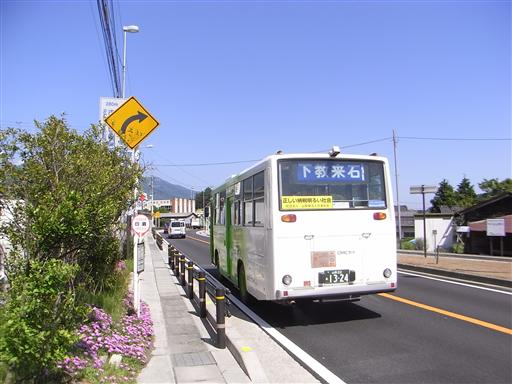
目の前には南アルプスの名峰・甲斐駒ヶ岳が見えるはずだが、
残念ながら雲に覆われている。
甲斐駒ヶ岳から右手に見える稜線はいつか辿ってみたい鋸岳への縦走路だ。
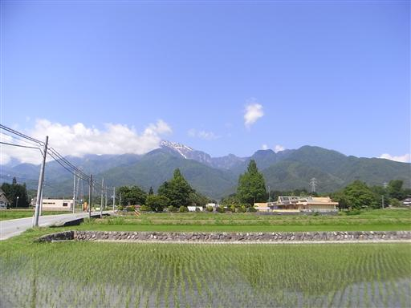
振り返ると八ヶ岳にも雲がかかっている。
今日は快晴だが、高い山にはみな雲がかかっている。
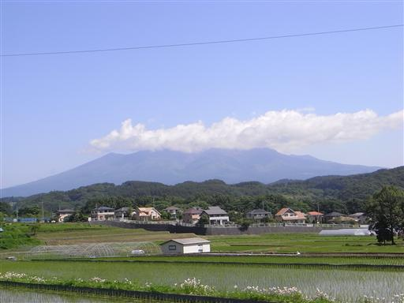
車道脇の幼稚園の敷地内に実物大の飛行機が置かれている。
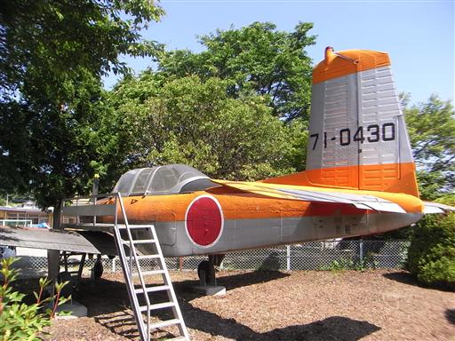
道端の畑には青くて美しい花が植えられている。
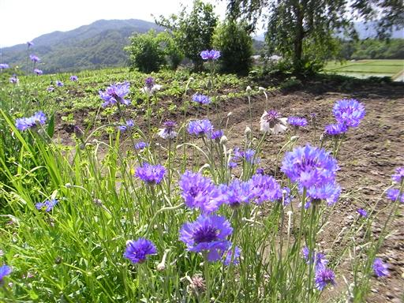
車道はだんだんと細くなり、山の中へと続いている。
この山は深くまで林道が通じているため車道歩きが長い。
次々に車やタクシーに追い抜かれる。
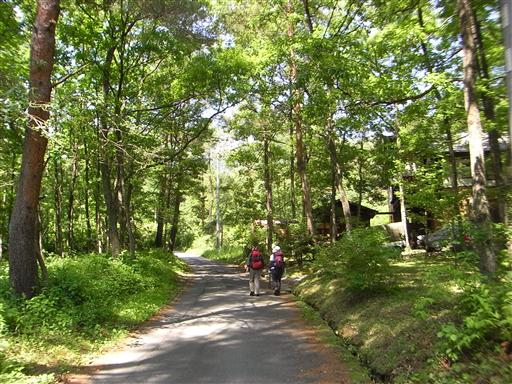
林道から少し視界が広がる。
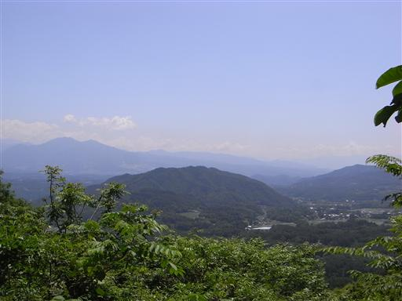
遠くの方に微かに富士山が望める。肉眼でもかろうじて見える程度だ。
もうあまり雪は無く、かなり地肌が見えている。
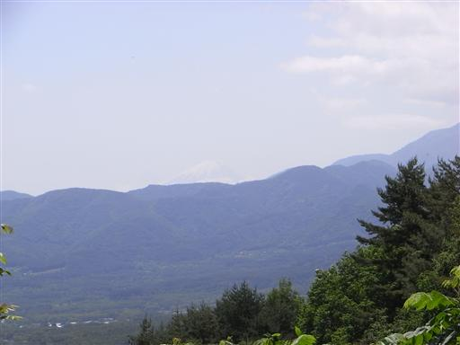
10:46 矢立石登山道入口到着。
周辺はたくさんの車が停まっている。かなり人気の山のようだ。
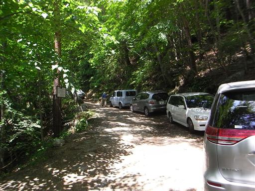
日向山への登山道へ入っていく。1時間半も林道を歩いてようやく登山道入口だ。
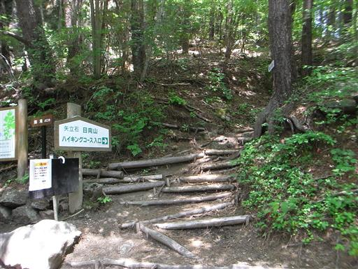
道端に石組みの炭焼窯跡がある。
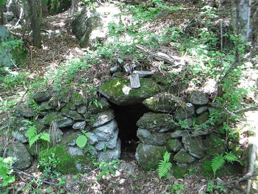
辺りの風景は完全に夏。虫の声がうるさいくらいだ。
久々に登山者が大勢いる登山道を歩く。
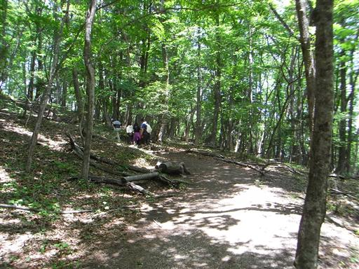
駒ヶ岳の標識があるので何かと思ったら、標識の先に駒ヶ岳が見えるということらしい。
この時期は葉の茂った樹木に覆われていて遠くの景色は全く見えない。

登山道脇に小さな石仏が祀られている。
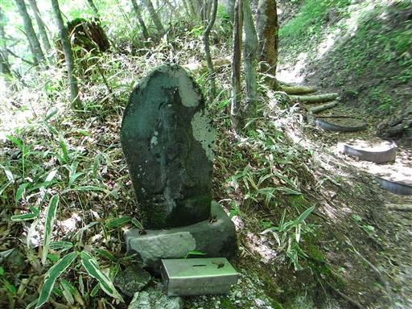
周辺はカラマツの植林地帯が多い。針葉はもうだいぶ伸びている。
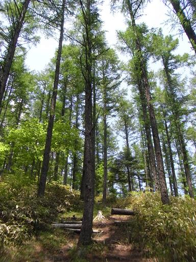
道端には所々でヤマツツジが見られる。濃い赤色のツツジだ。
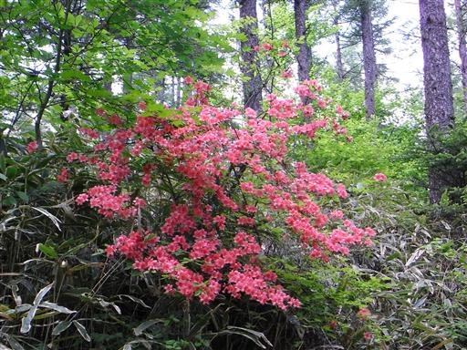
登山道は展望がなく、起伏も無く、一定の傾斜を保ったまま延々と続く。
「10-8」と書かれているので、8割は来たという事だろう。

雨量観測所が設置されている。
昔はこの山を里から眺めて、天気を占っていたらしい。
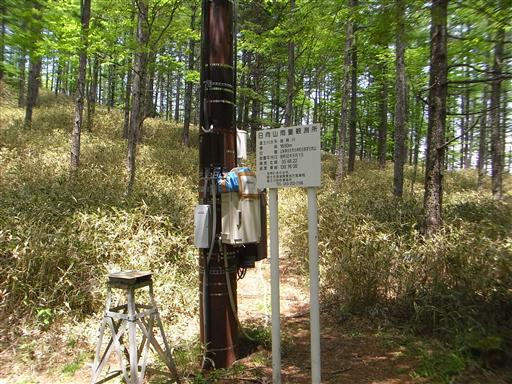
日向山の三角点に到着。登山道から少し外れたところにポツリと置かれている。
展望も山頂標識も何もない。
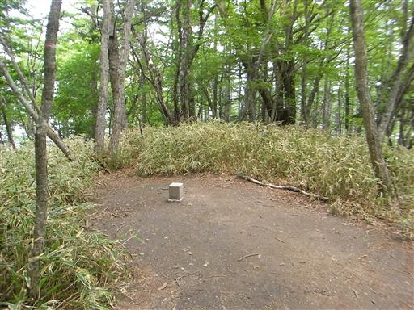
この辺りからカラマツ林は姿を消し、自然林のみが広がるようになる。
山頂に近づくと木漏れ日の下で大勢のハイカーが休憩している。
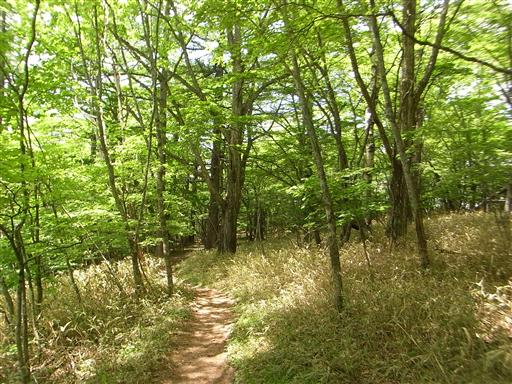
樹林帯を抜けたその先に明るい世界が見えてくる。
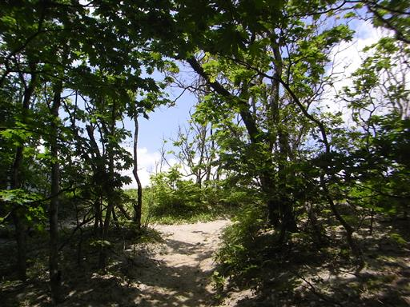
突然視界が大きく開ける。白砂に覆われた明るく開けた平地だ。
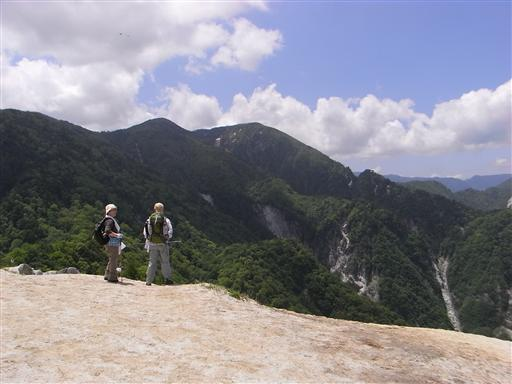
11:55 日向山山頂到着。標高1660m。
平地の一角に日向山の山頂標識が立てられている。
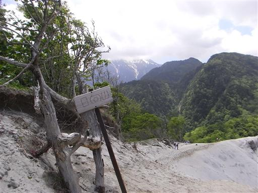
今まで樹林帯の中を歩いていたので、白い砂が非常に眩しい。
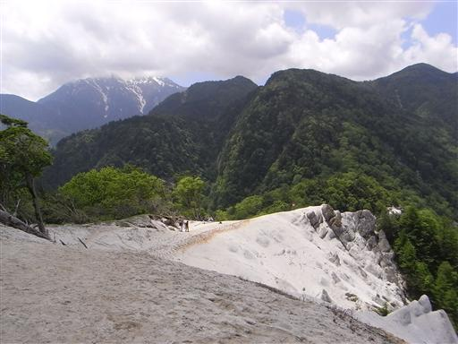
山頂部は花崗岩の奇岩が連なっている。白砂は花崗岩が風化したものだろう。
低山でこのような景色が広がる山は珍しい。
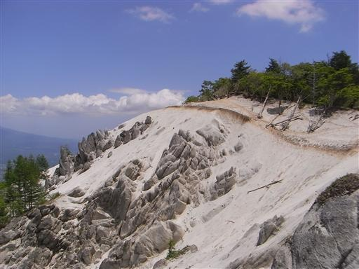
北方には八ヶ岳が完璧に見えている。山頂部を覆っていた雲はもう無い。

すぐ近くには雨乞岳が望める。こちらも南ア前衛の山で少し気になる山だ。
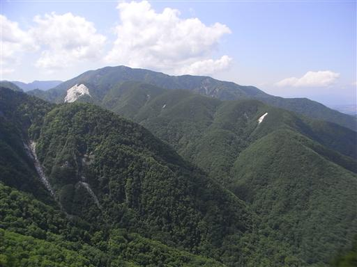
樹林帯との境界附近にはシロバナノヘビイチゴが花を咲かせている。
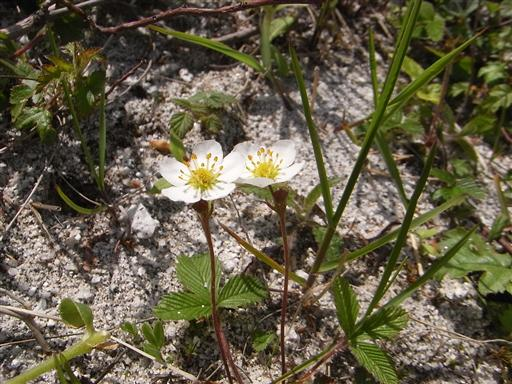
谷を覗くと急傾斜の白い斜面が谷底まで一直線に落ち込んでいる。

山頂部の一角には石碑があり、たくさんの賽銭が置かれている。
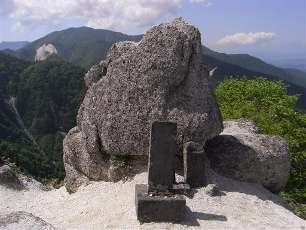
山頂でのんびり休憩していると、鳳凰三山にかかっていた雲が取れて姿を現す。
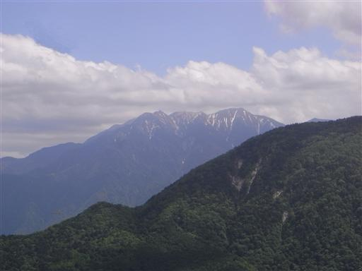
しかし、甲斐駒ヶ岳にかかる雲だけはどれだけ待っても取れない。
1時間半以上山頂で待ったが、結局甲斐駒ヶ岳の全貌は望めなかった。
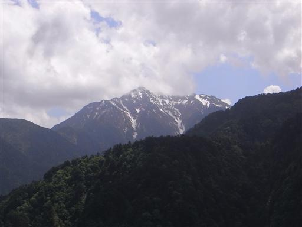
仕方が無いので下山することにする。
滑りやすい斜面を気をつけながら下っていく。
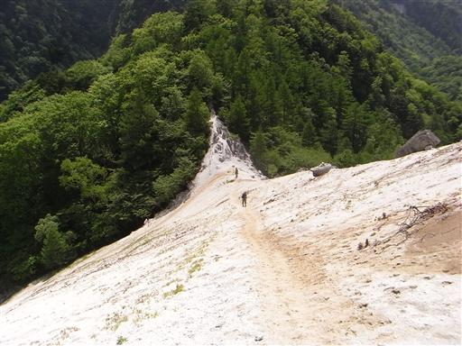
眩しい山頂部を振り返る。白い砂と青い空がきれいだ。
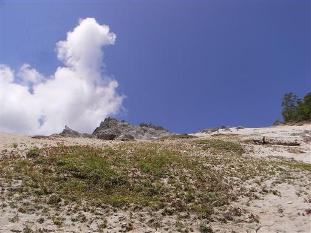
しばらく下ると登山道はすぐに暗い樹林帯に入っていく。
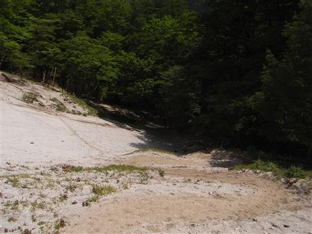
下山に使った道は比較的傾斜が急で、登りに使った道とは大違いだ。
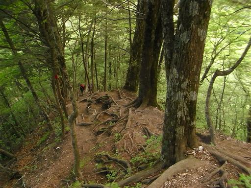
錦滝に到着。水量は少ないが、そこそこ落差はある。
滝の横にあるヤマツツジが良いアクセントになっている。
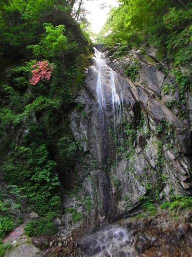
滝の側ではヒメレンゲの花が咲いている。
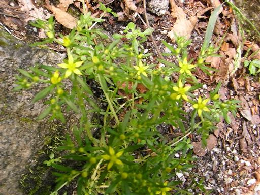
滝から先は林道を歩いていく。道は相当荒れていて林道とは名ばかりだ。
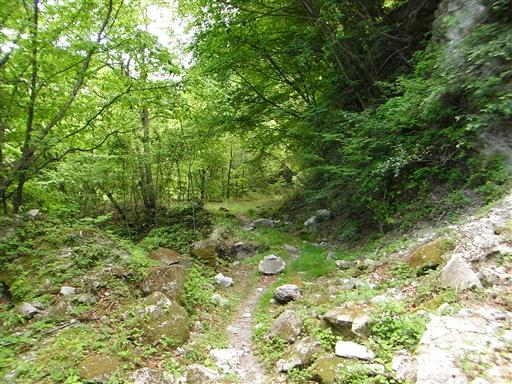
林道から再び登山道に入っていく。この道は歩く人が少なそうな感じだ。
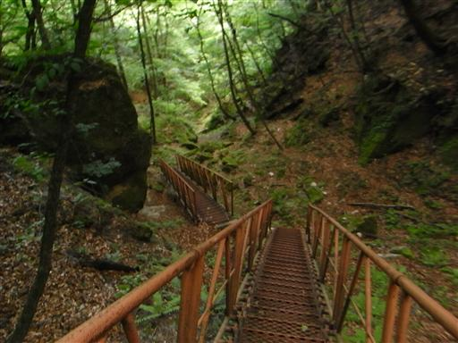
不動滝に到着。落差はそれほどないが水量が非常に多く迫力がある。

黒戸尾根登山道との分岐点に到着。
黒戸尾根は甲斐駒ヶ岳に通じる有名な登山道で、
標高差が2200mある日本屈指の急登だ。
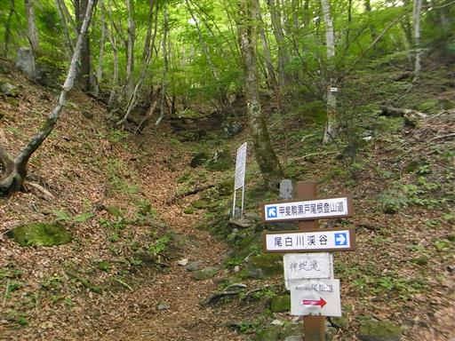
登山道を塞ぐように不思議な形に折れ曲がった枝が伸びている。
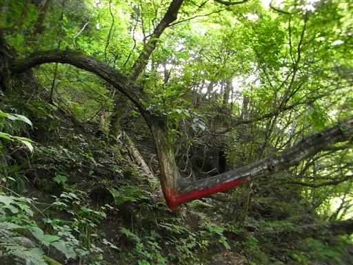
吊橋から尾白川渓谷を望む。
ここは有名な渓谷らしく、この辺りまで下ると観光客がたくさんいる。
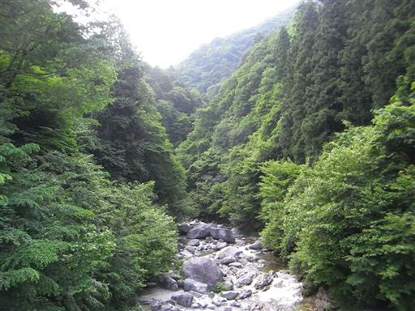
駒ヶ岳神社に到着。
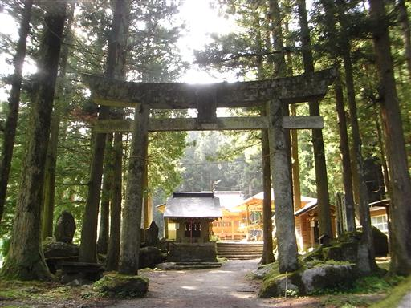
甲斐駒ヶ嶽と書かれた額がある。
次ここに来るときは黒戸尾根を登るときだろう。
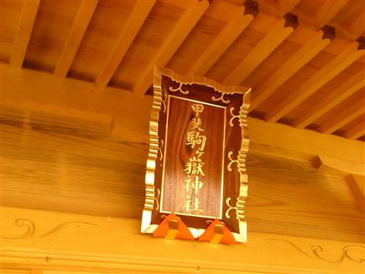
バスが来るまでかなり時間が空くので小淵沢駅に向かって歩いていると、
山で出会った人に車で拾ってもらえた。
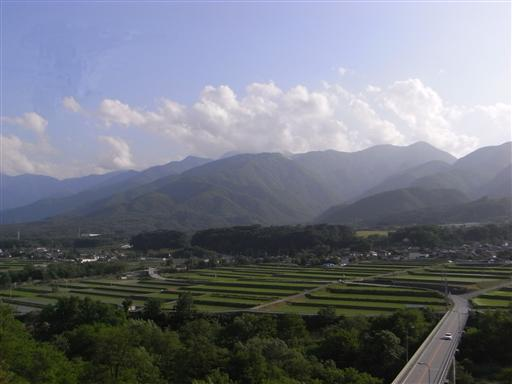